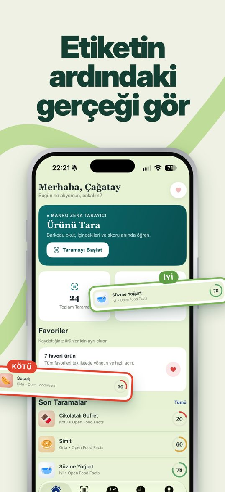
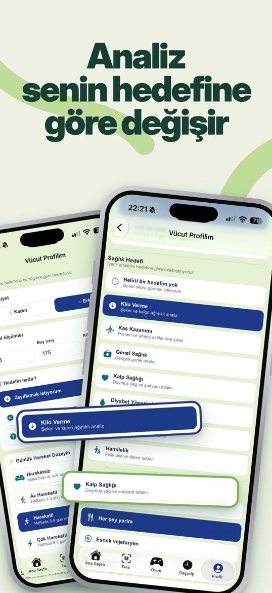
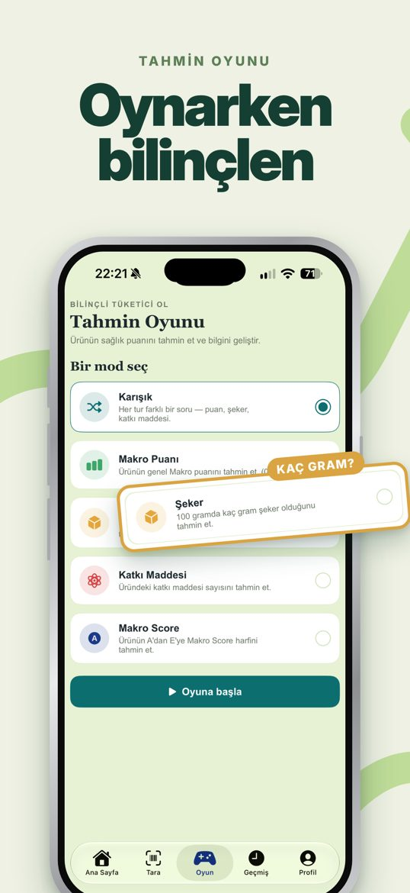
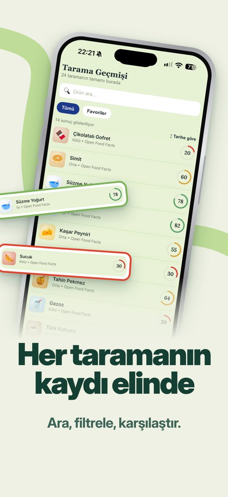
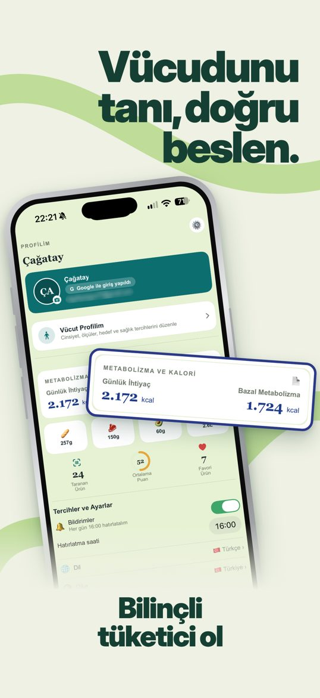

Neler yapabilirsin?
Barkod tara
Gıda ve kozmetik ürünlerini kamerayla veya numarayı yazarak bul.
Nutri-Skor, NOVA, Eco-Score
Beslenme kalitesini, işlenme düzeyini ve çevresel etkiyi gör.
Katkı maddeleri
E kodlu maddelerin ne işe yaradığını ve dikkat edilecek noktaları öğren.
Sana özel yorumlar
Hedefine (kilo verme, kas, kalp sağlığı, diyabet) ve kısıtlamalarına (vegan, glütensiz, laktozsuz) göre değerlendirme.
Alerjen uyarıları
Fıstık, gluten, süt ve çapraz bulaşma uyarıları.
Menü tarayıcı
Restoran menüsünün fotoğrafını çek, hedeflerine uygunluğunu gör.
Kozmetik analizi
Cilt bakım ve kişisel bakım ürünlerinin içeriklerini incele.
Oyun modları
Skor, şeker ve katkı maddesi tahmin oyunlarıyla eğlenerek öğren.
11 dil
Türkçe, İngilizce, Almanca, İspanyolca, Arapça, Fransızca, İtalyanca, Portekizce, Rusça, Çince, Japonca.
Gizliliğin önceliğimiz
Makro Zeka'nın sunucusu yoktur. Profilin, geçmişin ve favorilerin yalnızca telefonunda saklanır. İnternete giden tek bilgi, ürünü bulmak için taradığın barkod numarasıdır. Reklam ve izleme yoktur. Gizlilik Politikası
Ürün bilgileri, topluluk veritabanları Open Food Facts ve Open Beauty Facts'ten gelir (Open Database License). Makro Zeka tıbbi tavsiye vermez ve tıbbi cihaz değildir.
What can you do?
Scan food and cosmetic barcodes and get Nutri-Score, NOVA and Eco-Score, additive explanations, allergen warnings and personal comments based on your goals and dietary restrictions. Includes a restaurant menu scanner, cosmetic ingredient analysis, guessing games and 11 languages.
Privacy first
Makro Zeka has no server. Your profile, history and favorites stay on your phone. Only the barcode number you scan is sent to look up the product. No ads, no tracking. Privacy Policy
Product data: Open Food Facts and Open Beauty Facts (Open Database License). Not medical advice and not a medical device.